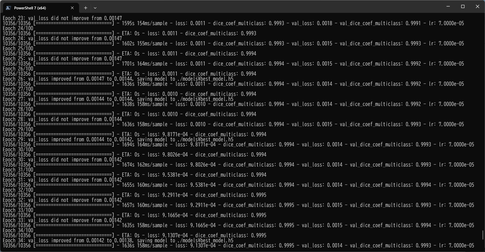

TensorFlow-FlexUNet-Image-Segmentation-UCSF-BrainMetastases-Stereotactic-Radiosurgery-MRI (2025/09/17)
Toshiyuki Arai
Software Laboratory antillia.com
This is the first experiment of Image Segmentation for The University of California San Francisco Brain Metastases
Stereotactic Radiosurgery MRI based on
our TensorFlowFlexUNet
(TensorFlow Flexible UNet Image Segmentation Model for Multiclass)
, and a 512x512 pixels PNG dataset which was derived by us from
The University of California San Francisco Brain Metastases Stereotactic Radiosurgery (UCSF-BMSR) MRI Dataset
As demonstrated in
TensorFlow-FlexUNet-Image-Segmentation-STARE-Retinal-Vessel ,
our Multiclass TensorFlowFlexUNet, which uses categorized masks, can also be applied to
single-class image segmentation models.
This is because it inherently treats the background as one category and your single-class mask data as
a second category. In essence, your single-class segmentation model will operate with two categorized classes within our Multiclass UNet framework.
Actual Image Segmentation for Images of 512x512 pixels
As shown below, the inferred masks predicted by our segmentation model trained on the
PNG dataset appear similar to the ground truth masks.
1 Dataset Citation
The dataset used here was obtained from
The University of California San Francisco Brain Metastases Stereotactic Radiosurgery (UCSF-BMSR) MRI Dataset
Description
The University of California San Francisco Brain Metastases Stereotactic Radiosurgery (UCSF-BMSR) dataset is a public,
clinical, multimodal brain MRI dataset consisting of 560 brain MRIs from 412 patients with expert
annotations of 5136 brain metastases. Data consists of registered and skull stripped T1 post-contrast, T1 pre-contrast,
FLAIR and subtraction (T1 pre-contrast - T1 post-contrast) images and voxelwise segmentations of
enhancing brain metastases in NifTI format. The dataset also includes patient demographics,
surgical status and primary cancer types. Currently 461 exams are available for download at the
UCSF center for Intelligent Imaging website. The remaining data will become available after the
2024 MICCAI/BraTS challenge. The UCSF-BSMR has been made publicly available in the hopes that researchers
will use these data to push the boundaries of AI applications for brain metastases.
For more information on the pretrained models for segmentation and skull stripping please
visit: https://github.com/rachitsaluja/UCSF-BMSR-benchmarks
Authors
Jeffrey D. Rudie MD PhD, Rachit Saluja MSE, David A. Weiss MSE, Pierre Nedelec,
Evan Calabrese MD PhD, John B. Colby MD PhD, Benjamin Laguna MD, John Mongan MD PhD,
Steve Braunstein MD PhD, Christopher P. Hess MD PhD, Andreas M. Rauschecker MD PhD,
Leo P. Sugrue MD PhD, Javier E. Villanueva-Meyer MD
How to Cite
https://arxiv.org/abs/2304.07248
https://pubs.rsna.org/doi/10.1148/ryai.230126
DOI
doi:10.58078/C24W2K
Version
1.3
2 UCSF-BrainMetastases ImageMask Dataset
2.1 ImageMask Dataset Generation
If you would like to train this UCSF-BrainMetastases Segmentation model by yourself,
you have to generate the PNG dataset by using the following Python scripts:
ImageMaskDatasetGenerator.py
split_master.py
The files and folders to generate the dataset will take the following structure:
./generetor
├─ImageMaskDatasetGeneratory.py
├─split_master.py
└─UCSF_BrainMetastases_v1.3
└─UCSF_BRAINMETASTASES_TRAIN
The first generator script generates a master image and mask dataset
of 512x512 pixels PNG format from 100*_seg.nii.gz and 100*_T1post.nii.gz
in subfolder under UCSF_BRAINMETASTASES_TRAIN folder.
By changing a few lines in the generator, you can create a different type of image and mask dataset
from this.
./UCSF_BRAINMETASTASES_TRAIN
├─100101A
│ ├─100101A_seg.nii.gz
│ └─100101A_T1post.nii.gz
├─100102A
│ ├─100102A_seg.nii.gz
│ └─100102A_T1post.nii.gz
...
└─100414B
├─100414B_seg.nii.gz
└─100414B_T1post.nii.gz
The second splitter simply splits the master into test, train and valid subsets.
By running these Python scripts, finally a 512x512 pixels PNG UCSF-BrainMetastases dataset will be
created under dataset folder as shown below..
./dataset
└─UCSF-BrainMetastases
├─test
│ ├─images
│ └─masks
├─train
│ ├─images
│ └─masks
└─valid
├─images
└─masks
UCSF-BrainMetastases Statistics
As shown above, the number of images of train and valid datasets is large enough to use for a training set of our segmentation model.
You may not redistribute this PNG dataset generated from UCSF-BMSR MRI Dataset, and
commercial use of this dataset is prohibited.
2.2 Mini-test Dataset Generation
You also have to generate a mini_test dataset from UCSF-BrainMetastases/test subset by yourself,
depending on your choices,
which can be used in EpochChangeInferencer Callback and an actual segmentation (predictioin) process.
./projects
└─TensorflowFlexUNet
└─UCSF-BrainMetastases
└─mini_test
├─images
└─masks
2.3 Tran Images and Masks Sample
Train_images_sample
Train_masks_sample
3 Train TensorFlowUNet Model
We have trained UCSF-BrainMetastases TensorFlowUNet Model by using the following
train_eval_infer.config file.
Please move to ./projects/TensorFlowFlexUNet/UCSF-BrainMetastasesand, and run the following bat file.
>1.train.bat
, which simply runs the following command.
>python ../../../src/TensorFlowUNetTrainer.py ./train_eval_infer.config
Model parameters
Defined a small base_filters = 16 and large base_kernels = (7,7) for the first Conv Layer of Encoder Block of
TensorFlowUNet.py
and a large num_layers (including a bridge between Encoder and Decoder Blocks).
[model]
image_width = 512
image_height = 512
image_channels = 3
num_classes = 2
base_filters = 16
base_kernels = (7,7)
num_layers = 8
dropout_rate = 0.04
dilation = (1,1)
Learning rate
Defined a very small learning rate.
[model]
learning_rate = 0.00007
Online augmentation
Disabled our online augmentation.
[model]
model = "TensorFlowUNet"
generator = False
Loss and metrics functions
Specified "categorical_crossentropy" and "dice_coef_multiclass".
You may specify other loss and metrics function names.
[model]
loss = "categorical_crossentropy"
metrics = ["dice_coef_multiclass"]
Learning rate reducer callback
Enabled learing_rate_reducer callback, and a small reducer_patience.
[train]
learning_rate_reducer = True
reducer_factor = 0.5
reducer_patience = 4
Early stopping callback
Enabled early stopping callback with patience parameter.
[train]
patience = 10
RGB Color map
rgb color map dict for UCSF-BrainMetastases 1+1 classes.
[mask]
mask_datatype = "categorized"
mask_file_format = ".png"
; Background UCSF-BrainMetastases: white
rgb_map = {(0,0,0):0,(255, 255, 255):1,}
Epoch change inference callback
Enabled epoch_change_infer callback (EpochChangeInferencer.py).
[train]
epoch_change_infer = True
epoch_change_infer_dir = "./epoch_change_infer"
num_infer_images = 6
By using this callback, on every epoch_change, the inference procedure can be called
for 6 images in mini_test folder. This will help you confirm how the predicted mask changes
at each epoch during your training process.
Epoch_change_inference output at starting (epoch 1,2,3)
Epoch_change_inference output at middlepoint (epoch 15,16,17)
Epoch_change_inference output at ending (epoch 32,33,34)
In this experiment, the training process was terminated at epoch 34.

train_metrics.csv

train_losses.csv
4 Evaluation
Please move to a ./projects/TensorFlowFlexUNet/UCSF-BrainMetastases folder,
and run the following bat file to evaluate TensorFlowUNet model for UCSF-BrainMetastases.
./2.evaluate.bat
This bat file simply runs the following command.
python ../../../src/TensorFlowUNetEvaluator.py ./train_eval_infer_aug.config
Evaluation console output:
Image-Segmentation-UCSF-BrainMetastases
evaluation.csv
The loss (bce_dice_loss) to this UCSF-BrainMetastases/test was very low, but dice_coef very high as shown below.
categorical_crossentropy,0.0015
dice_coef_multiclass,0.9993
5 Inference
Please move to a ./projects/TensorFlowFlexUNet/UCSF-BrainMetastases folder
,and run the following bat file to infer segmentation regions for images by the Trained-TensorFlowUNet model for UCSF-BrainMetastases.
./3.infer.bat
This simply runs the following command.
python ../../../src/TensorFlowUNetInferencer.py ./train_eval_infer_aug.config
mini_test_images
mini_test_mask(ground_truth)
Inferred test masks

Enlarged images and masks
Acknowledgments
We sincerely appreciate the cooperation and advice of John Mongan, MD, PhD
Associate Chair, Translational Informatics
Professor of Clinical Radiology
Department of Radiology and Biomedical Imaging
University of California San Francisco
References
1. The University of California San Francisco Brain Metastases Stereotactic Radiosurgery (UCSF-BMSR) MRI Dataset
Jeffrey D Rudie,✉, Rachit Saluja, David A Weiss, Pierre Nedelec, Evan Calabrese,
John B Colby, Benjamin Laguna, John Mongan, Steve Braunstein, Christopher P Hess,
Andreas M Rauschecker, Leo P Sugrue, Javier E Villanueva-Meyer
https://pmc.ncbi.nlm.nih.gov/articles/PMC10982817/
2. UCSF-BMSR-benchmarks
Rachit Saluja
https://github.com/rachitsaluja/UCSF-BMSR-benchmarks
The official nnUNet benchmarks for
The University of California San Francisco Brain Metastases Stereotactic Radiosurgery (UCSF-BMSR) dataset.